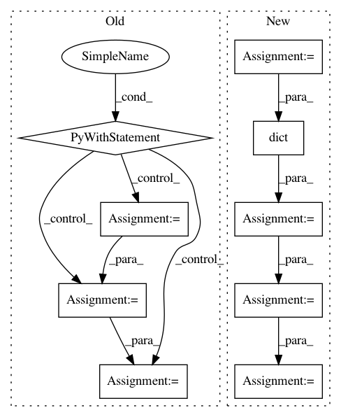

054095d922edda5134e520522bc82a1b95cc5bd4,onnx_tf/backend_rep.py,TensorflowRep,run,#TensorflowRep#Any#,52
Before Change
super(TensorflowRep, self).run(inputs, **kwargs)
// TODO: handle name scope if necessary
with self.graph.as_default():
with tf.compat.v1.Session() as sess:
if isinstance(inputs, dict):
feed_dict = inputs
elif isinstance(inputs, list) or isinstance(inputs, tuple):
if len(self.inputs) != len(inputs):
raise RuntimeError("Expected {} values for uninitialized "
"graph inputs ({}), but got {}.".format(
len(self.inputs), ", ".join(self.inputs),
len(inputs)))
feed_dict = dict(zip(self.inputs, inputs))
else:
// single input
feed_dict = dict([(self.inputs[0], inputs)])
feed_dict = {
self.tensor_dict[key]: feed_dict[key] for key in self.inputs
}
sess.run(tf.compat.v1.global_variables_initializer())
outputs = [self.tensor_dict[output] for output in self.outputs]
output_values = sess.run(outputs, feed_dict=feed_dict)
return namedtupledict("Outputs", self.outputs)(*output_values)
def export_graph(self, path):
Export backend representation to a Tensorflow proto file.
This function obtains the graph proto corresponding to the ONNX
After Change
// single input
feed_dict = dict([(self.inputs[0], inputs)])
input_dict = dict(
[(x[0], tf.constant(x[1])) for x in feed_dict.items()])
output_values = self.tf_module(**input_dict)
output_values = [val.numpy() if isinstance(val, tf.Tensor) else val for val in output_values]
return namedtupledict("Outputs", self.outputs)(*output_values)
def export_graph(self, path):
In pattern: SUPERPATTERN
Frequency: 3
Non-data size: 9
Instances
Project Name: onnx/onnx-tensorflow
Commit Name: 054095d922edda5134e520522bc82a1b95cc5bd4
Time: 2020-09-09
Author: smonov@gmail.com
File Name: onnx_tf/backend_rep.py
Class Name: TensorflowRep
Method Name: run
Project Name: gyoisamurai/GyoiThon
Commit Name: 4f53bca9b044b20bc4aa8b7719bbbb2984623b3a
Time: 2018-06-04
Author: gyoiler3@gmail.com
File Name: classifier4gyoithon/GyoiClassifier.py
Class Name:
Method Name:
Project Name: gyoisamurai/GyoiThon
Commit Name: 5765f471197edbf64a57dd2628dcd3051c7ea46c
Time: 2018-06-04
Author: gyoiler3@gmail.com
File Name: gyoithon.py
Class Name:
Method Name: